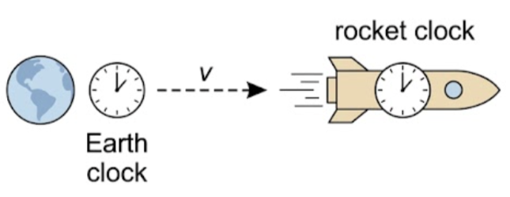
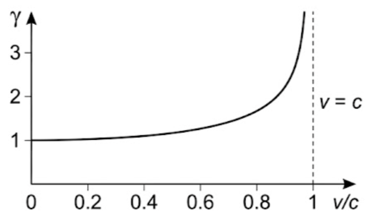
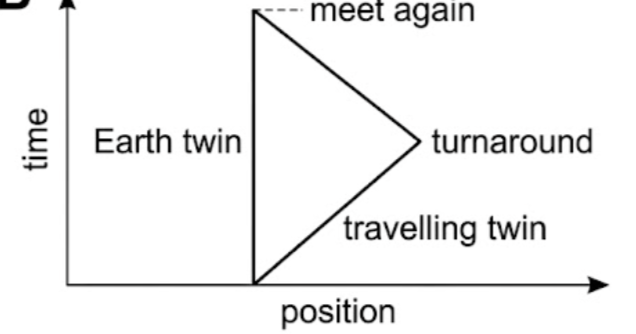
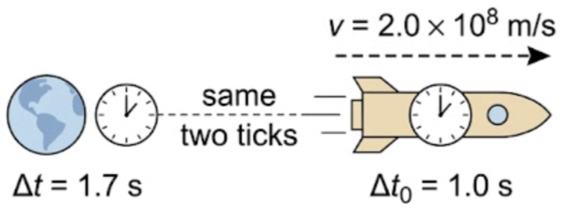

🚀 Hook – whose clock is really ticking slow?
A rocket streaks away from Earth carrying a clock that ticks once every second, as measured by the astronaut sitting next to it. An observer back on Earth, watching that same clock through a telescope, times the gap between ticks too. The two observers do not get the same answer — and, strangely, each one measures the other's clock as running slow.

📐 From the Lorentz transformation to Δt = γΔt₀
An observer in reference frame \(S\) measures a time interval \(\Delta t\) between successive ticks of a clock that is stationary in their own frame. An observer in reference frame \(S^{\prime}\), moving with relative velocity \(v\), measures a greater time interval for the same two ticks, given by the Lorentz transformation:
Since the two ticks of the clock happen at the same place in its own frame, \(\Delta x = 0\), so the equation simplifies to the time dilation formula:
where \(\gamma = 1/\sqrt{1-v^2/c^2}\). Since \(\gamma\) is always greater than one, every other observer measures a longer time interval than the observer who sees the two events happen in the same place.
👬 The twin paradox
The twin paradox appears to challenge special relativity: it seems impossible that two twins should each find that they are older than the other. One twin remains on Earth while the other travels at high speed to a distant star and returns.
Because \(\gamma\) is always greater than one, the ticks of a clock in a frame \(S^{\prime}\) moving relative to where the clock is at rest (frame \(S\)) are always measured as further apart — this is time dilation, and it works both ways: each twin measures the other's clock as running slow while they are in relative motion. Whether the paradox resolves, and in whose favour, depends on which twin actually changes reference frame (accelerates) to turn around — a situation this course does not analyse in detail, since we only consider frames moving at constant relative velocity.

ATL A5B — Research skills. Research the twin paradox: explain why it is described as a paradox, and outline how it is resolved.
It is important to realise that time dilation refers to all processes, not just the ticking of a clock. Time proceeds at different rates for frames of reference that are moving relative to each other, but this only becomes relevant at very high speeds. In this course we do not consider what happens to accelerating frames of reference, or frames of reference that are moving closer together.
📈 The Lorentz factor, γ
| Graph type | Axes (X, Y) | Shape | What to read |
|---|---|---|---|
| Lorentz factor vs. speed | \(v/c\) (0 to 1) · \(\gamma\) | Starts at \(\gamma=1\), rises gently, then shoots up steeply as \(v/c \to 1\) | \(\gamma\) never drops below 1; the curve never reaches \(v=c\) — it is asymptotic there |
| Dilated time vs. proper time | \(\Delta t_0\) · \(\Delta t\) | Straight line through the origin, gradient \(\gamma\) | The gradient IS the Lorentz factor for that relative speed; steeper line = higher speed |


✍️ Worked example A5.10
A rocket is travelling at \(2.0\times10^{8}\ \text{m s}^{-1}\) away from Earth. a) The rocket carries a clock which ticks once every second. Calculate the time interval between ticks of the clock as observed on Earth. b) How would your answer change if the clock was on Earth and observed from the rocket?
\(\Delta t = \gamma \Delta t_0 = 1.7 \times 1.0\)
Answer b): the situation is symmetrical — 1.0 s on Earth corresponds to 1.7 s on the rocket.
🌍 Real-world: proper time and how to spot it
A proper time interval, \(\Delta t_0\), is the time interval between two events that take place at the same location as the observer. It is the shortest time interval between the two events measured by any observer — every other observer measures a longer interval.
To decide who measures proper time: imagine yourself in each observer's reference frame in turn and ask whether the \(x\), \(y\) and \(z\) coordinates of the two events are the same. If they are, that observer measures the proper time between them.
🚀 HL Extension – rewriting the formula with proper time
Once we identify the proper time interval, the time-dilation formula is usually written the other way round:
where \(\Delta t_0\) is the proper time interval, measured by the observer who sees both events occur in the same place, and \(\Delta t\) is the (always longer) interval measured by any other observer.
Challenge: a muon is created high in the atmosphere and decays a short proper lifetime later. Which observer — one travelling with the muon, or one standing on the ground watching it — measures the proper time of its decay? (Answer: the observer travelling with the muon, since the muon's creation and decay happen at the same point in the muon's own frame.)
⚠️ Trap corner – common mistakes
| Misconception | Correct view |
|---|---|
| "Time dilation means the moving clock physically breaks or slows its mechanism" | Nothing is wrong with the clock. It is a genuine effect of measuring time across two reference frames in relative motion, not a mechanical fault |
| "Only the twin who travels experiences time dilation" | While the frames move at constant relative velocity, the effect is symmetric — each twin measures the other's clock as running slow. Any asymmetry in the final ages comes from the turnaround acceleration, which this course does not analyse in detail |
| "γ can be less than 1 if the observer is moving fast enough" | \(\gamma = 1/\sqrt{1-v^2/c^2}\) is always \(\geq 1\); it equals 1 only when \(v=0\) and grows without limit as \(v \to c\) |
| "Time dilation only matters for clocks" | It applies to every physical process in the moving frame — biological ageing, radioactive decay, chemical reactions — not just the ticking of a mechanical clock |
Complete the statements:
✓ In the electron's own frame, both events happen at the electron's own location (x′ = 0) — so the observer travelling with the electron measures the proper time.
✓ The laboratory observer sees the events 5.00 m apart and so measures a longer, dilated time.
✓ Both events happen at the same location — the fixed point — in the fixed-point observer's frame, so that observer measures the proper time.
✓ In the rod's own frame the fixed point sweeps past two different points on the rod, so the rod observer does not measure proper time here.
✓ In the rod's own frame, both events occur at the same point on the rod — the front tip — so the observer travelling with the rod measures the proper time.
✓ In the rod's own frame the two events occur at two different points on the rod (the front and the back), so the rod observer is not measuring proper time either.
✓ Neither observer measures the proper time interval in this case.